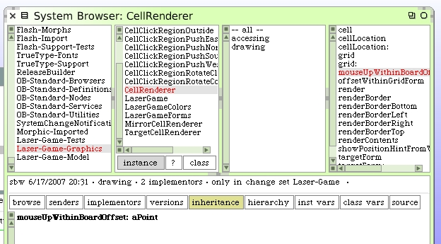

If we were to do the same thing for our mouse-up event, the LaserGame morph would determine which renderer should have the request. That renderer determines which click region handles the request and then the actual mouse event activity is resolved.
We begin by writing a new mouse-up handling method on our LaserGame class.
The method #mouseUpWithinBoardOffset: has not been defined yet.
Modify the #mouseUp:forMorph: method to use this instead of logging diagnostics.
Obviously our renderer hierarchy needs to handle the #mouseUpWithinBoardOffset: method send. The parent renderer superclass does nothing. Only the mirror renderer will deal with this request for now.
Here is the code for our mirror cell renderer. We're not done here yet.
The temporary variable "regionClass" is defined but currently unused.
We're now at the point where we know which click-region is involved. A mouse-up event in the outer region would produce a rotate action. A mouse-up event in the inner region would produce a push action. Also, the MirrorCellRenderer knows about the cell object. The click-region classes do not. If we want to maintain polymorphism and delegate our click logic "down" we will have to give the cell object information to the click-region in the message we generate.
We begin implementing the handling of the event in the CellClickRegion. Note this is a class method. This guy will do nothing. All the work will happen in the subclasses.
Here is the code for the handling within the outside click region. Note the method #mouseUpForCell: still needs to be written.
The method #mouseUpForCell: has not been written yet.
The inside region. We'll leave off the sending of the #mouseUpForCell: message here since we're not ready to deal with cell push just yet.